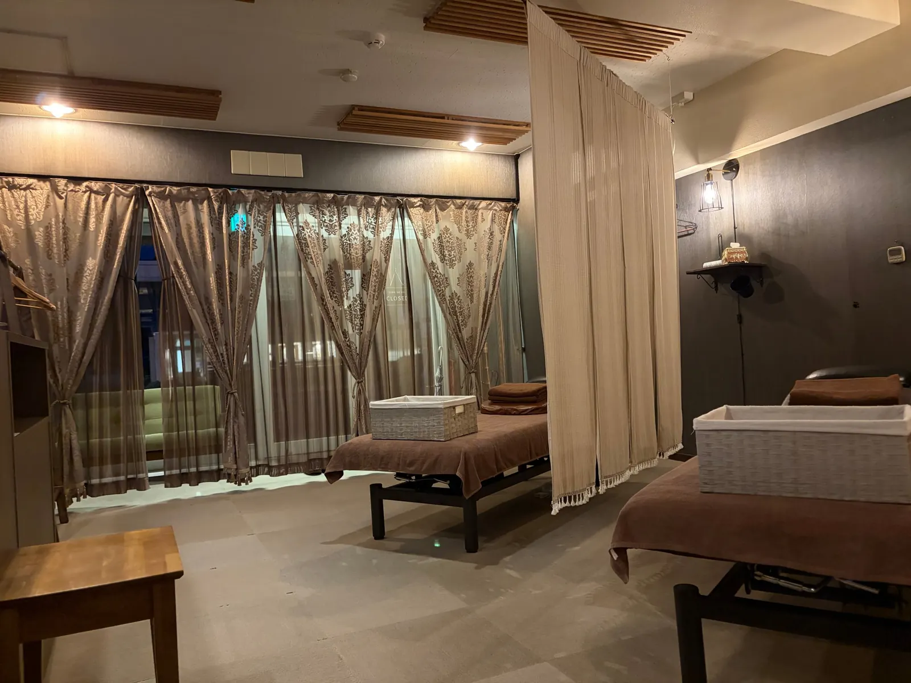

スタッフ紹介
揉蔵のスタッフをご紹介します。
担当者は、ご予約のときにご指名いただけます（リクエスト料400円）。出勤日と空き状況は、WEB予約でご確認いただけます。
スタッフの紹介は、ただいま準備中です。
紹介を読み込めませんでした。時間をおいて開き直すか、お電話でお問い合わせください。

揉蔵のスタッフをご紹介します。
担当者は、ご予約のときにご指名いただけます（リクエスト料400円）。出勤日と空き状況は、WEB予約でご確認いただけます。
スタッフの紹介は、ただいま準備中です。
紹介を読み込めませんでした。時間をおいて開き直すか、お電話でお問い合わせください。